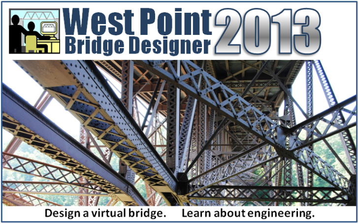

What's new in the Second Edition?

Welcome!
Welcome to the Second Edition of the Bridge
Designer 2016! With well over 2.5 million copies in circulation, the
original Bridge Designer is one of the most successful
educational software technologies in the world. The new edition is an update designed to
provide an even richer introductory engineering experience for
young people working alone, in teams, or with a teacher.
New Features
Please enjoy checking out the new possibilities!
-
Old-style graphics option. Computers lacking the graphics
features needed for the Second Edition load test walk-through can still enjoy
animation by selecting old-style graphics, similar to the original.
A recap of Second Edition features:
-
Macintosh and Linux support. Newer OS X Macintosh
computers are excellent platforms for the Second Edition. Linux support will be
provided as future demand indicates.
-
3D walk-through of completed bridges. Walk and fly under, around,
and through the animation of your completed bridge to observe its performance while the
truck load drives over the deck.
-
Member Details. An interactive Member Details explorer supplements
the Members List with dynamically updated engineering information about member
cross-sections, materials, lengths, and costs.
-
Unlimited Undo. The limit of 5 is gone! Undo and redo all edits for the current design iteration.
-
Iterations Tree View. Track your design iterations with a new
view that graphically shows the history of each one.
-
Enhanced blueprints. Print your bridge in a beautiful format
suitable for framing.
-
Click and drag member list selections. Click and drag to select a
group of members in the member list.
-
Filename associations. .Double-click a file with a bdc file name extension to start the BD and load the file.
See Also
What's new in the Bridge Designer for 2016?